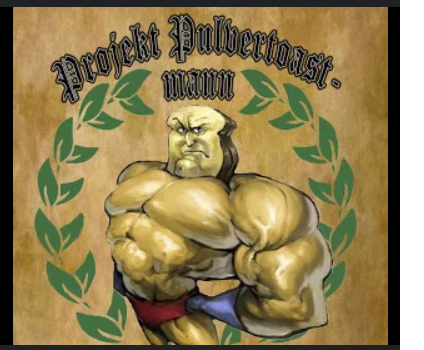

35 Jahre, Weiterbildung bei Techstarter

Hallo, ich bin Jan Zorn, meine Hobbys sind Kraftsport, MMA und Motorrad fahren. Momentan befinde ich mich in einer Weiterbildung bei Techstarter, um neue berufliche Herausforderungen zu meistern. Zuvor war ich Abteilungsleiter bei Globus Baumarkt im Bereich Baustoffe und anschließend Produktionsmitarbeiter bei ZF.